What is the Django admin good for?
Karen Tracey
DjangoCon US 2014
Who am I?
- Using Django since 2006
- Crossword DB
- Cat tracker
- Core developer since 2008
- Working at Caktus since 2010
- ~Dozen client web sites
- Varied admin use
What is Django admin?
- Django's "killer app"
- Easy BREAD interface
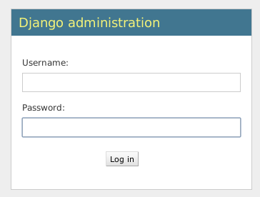
Index page
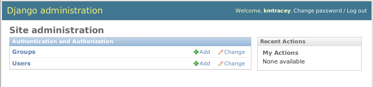List view
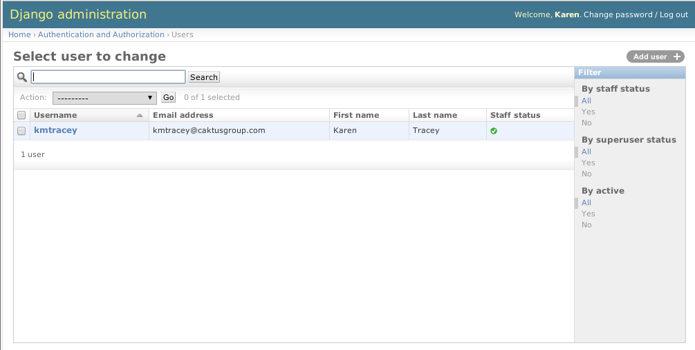Edit page
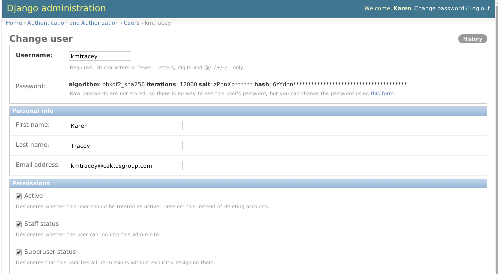Who should use admin?
- Developers
- Site admins
- End users
Easy base customization
from django.contrib import admin
admin.site.site_header = "Karen's Crossword DB"
admin.site.site_title = "Crossword DB admin"
admin.site.index_title = \
"Crossword DB site administration"
(Easy new in Django 1.7)
Custom login
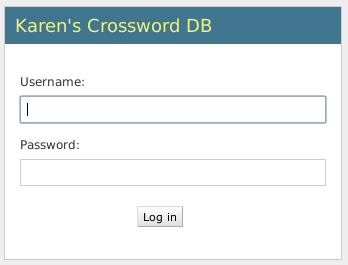Custom index page
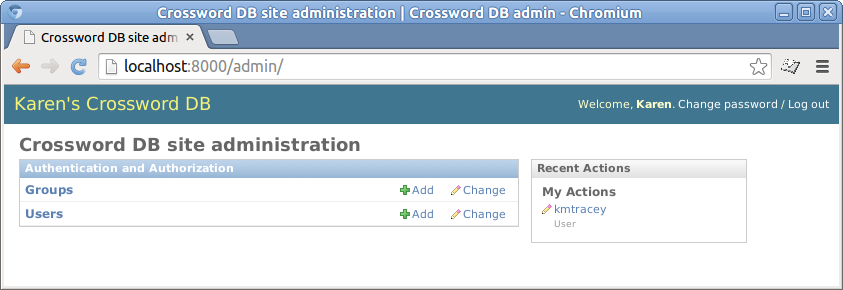ModelAdmin objects
- Representation of model in admin
- Usually defined in admin.py
- Registered with the admin site
- Many many many options
ModelAdmin example
from django.contrib import admin
from .models import Cat
from .filters import ActiveFosterHomesFilter
# 1.7: @admin.register(Cat)
class CatAdmin(admin.ModelAdmin):
list_display = ('name', 'intake_date', ...)
list_filter = ('status', 'avail',
ActiveFosterHomesFilter, ...)
list_editable = ('avail',)
search_fields = ('name', 'adopted_name',
'group__name', 'group__back_story',
'adopter__name',)
...
admin.site.register(Cat, CatAdmin) # pre-1.7
Custom list page 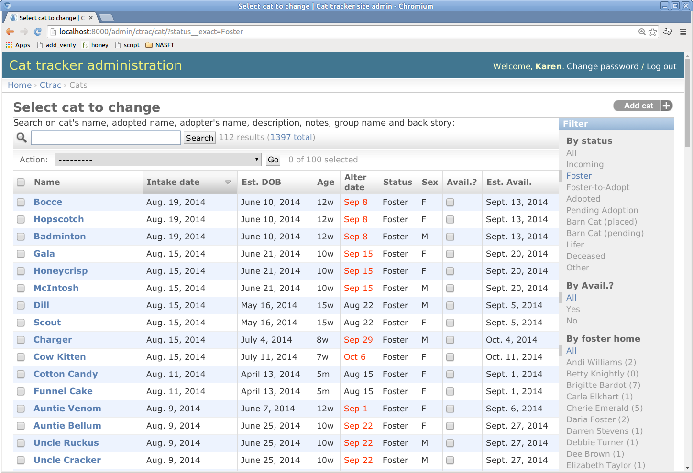
list_display
- May be simple field name
- ...or callable specified umpteen different ways
- Callables take object instance as parameter
Example: alter date
Method on the model, 'alter_date' in list_display
def alter_date(self):
if self.sn_date:
return dateformat.format(self.sn_date, "M j")
else:
return \
'%s' % \
dateformat.format(
self.alter_week_asdate(), "M j")
alter_date.allow_tags = True
alter_date.admin_order_field = 'est_dob'
alter_date.short_description = \
mark_safe('Alterdate')
list_filter
- May be simple field
- ...or custom filter code
ActiveFosterHomeFilter (1 of 2)
from django.contrib.admin import SimpleListFilter
def fh_tuple(fh):
# returns tuple of fh.pk and
# human-readable description
class ActiveFosterHomesFilter(SimpleListFilter):
title = u'foster home'
parameter_name = u'fh'
def lookups(self, request, model_admin):
return [fh_tuple(fh) for fh in
FosterHome.objects.filter(active=True)]
...
ActiveFosterHomeFilter (2 of 2)
class ActiveFosterHomesFilter(SimpleListFilter):
...
def queryset(self, request, qs):
if self.value():
qs = qs.filter(
foster_home__pk=self.value())
return qs
search_fields
- May be simple field
- May span relationships with __ syntax
- e.g.: adopter__name
- Prefixes ^=@ can alter search behavior
- Admin does not automatically describe what is searched
Describing search
Custom cats/templates/admin/ctrac/cat/change_list.html
{% extends "admin/change_list.html" %}
{% block search %}
Search on cat's name, adopted name, adopter's name,
description, notes, group name and back story:
{{ block.super }}
{% endblock %}
Customizing edit
- fieldsets to organize fields
- readonly_fields to show but not allow edit
- inlines to show related objects
- custom form for additional control
Fieldsets
- List of 2-tuples describing sets of fields
- First is name string (can be empty)
- Second is dict of "options"
- Expected keys in dict include fields and classes
Fieldsets example
fieldsets = (
('', {
'fields':
(('name', 'intake_date', 'foster_home',),
('test_date', 'sn_date',),
('adopted_name', 'adoption_date',
'adopter'))
}),
('Description', {
'fields':
(('type', 'sex'),
('desc', 'markings'),),
'classes': ('collapse',)
}),
)
Can get painful!
readonly_fields
- List of "fields" to display but exclude from form
- May be callable
Inlines
Show and allow add/edit/delete of related objects
class InlineAdoptedCat(admin.TabularInline):
model = Cat
fields = ('name', 'adopted_name', 'microchip_info')
readonly_fields = ('name', 'microchip_info')
max_num = 0
can_delete = False
class CaretakerAdmin(admin.ModelAdmin):
....
inlines = [InlinePhone, InlineEmail,
InlineAdoptedCat]
Inlines example
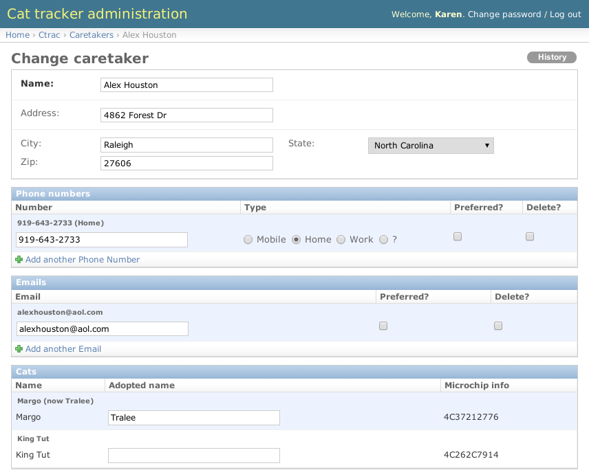Bulk editing
- Limited via list_editable
- Admin actions very flexible
Admin actions
actions = ['vax_cats', 'test_cats', 'move_cats', ...]
def vax_cats(self, request, queryset):
selected = ['%s' % pk for pk in
queryset.values_list('pk', flat=True)]
return HttpResponseRedirect("%s?cpk=%s" % \
(reverse('ctrac_vaxcats'), ",".join(selected)))
vax_cats.short_description = 'Vax selected cats'
Actions: selecting
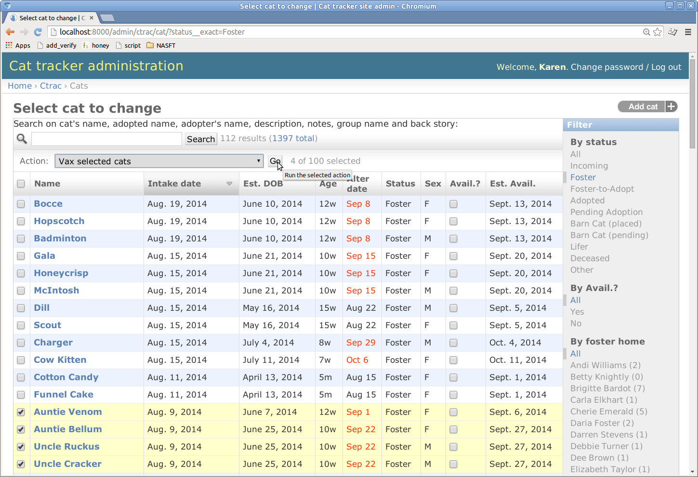Actions: next page
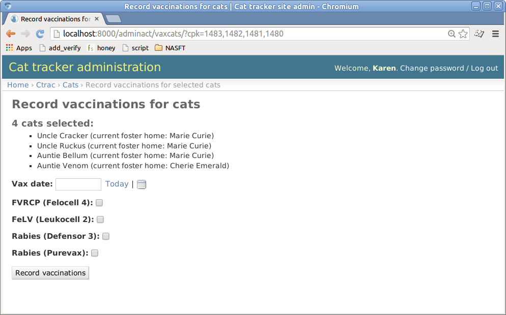Access control - groups
Groups and permissions for broad access control
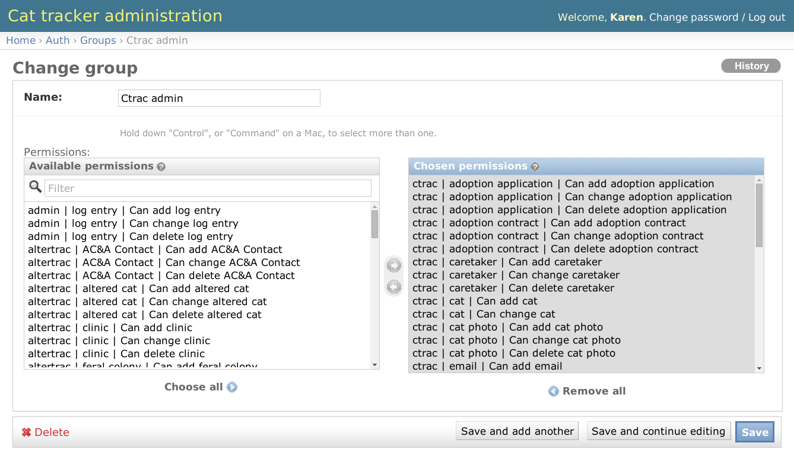Advanced access control
- Model admin methods to fetch most of the various options on a per-request basis
- Example: allow user edit but not superuser field access to non-superusers
Limits of Admin
- No "reporting"
- No "workflow"
- No "dashboard"
- No nested inlines (#9025)
- Does not look like your site
Moving beyond admin
- Model forms...you've likely already got them
- CSS frameworks, form presentation helpers
- Custom code, crib from admin!
Questions?